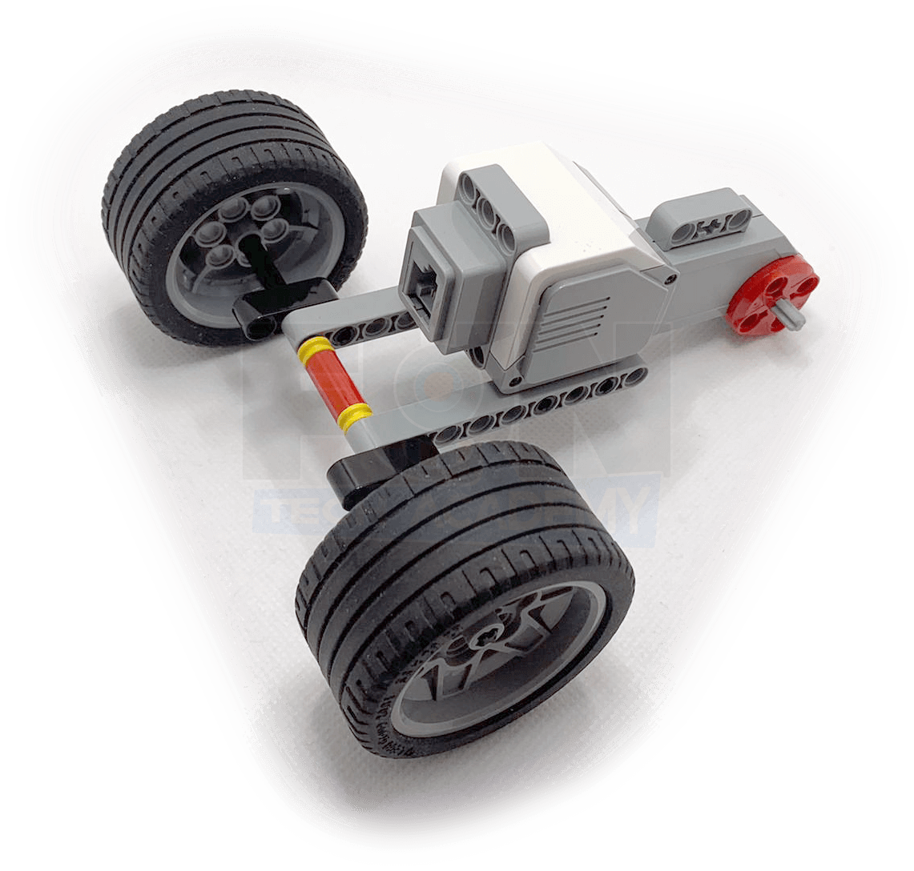

Hoy toca construir unrobot capaz de subir peldaños y atravesar obstáculos.

La idea es que el robot sea capaz de atravesar distintos obstáculos.
Empezaremos por montar el eje del motor que dará movimiento al robot será donde irán enganchadas las patas,
así como la estructura donde irán las ruedas que darán movilidad al robot.
Ahora montaremos el eje trasero donde montaremos las ruedas libres.


Vamos a construir las patas que harán que no se nos resista ningún obstáculo
Y se las añadiremos a la estructura que tenemos montada. Tienen que alternarse una de cada lado a la hora de moverse.

Con esto, tendríamos terminado nuestro sube peldaños.

Le añadimos el cableado y nos debería de quedar un montaje de este estilo.
En este caso no lo programaremos sino que utilizaremos la aplicación Comander para manejar nuestro sube peldaños.
Nuestro proyecto terminado funcionaría de la siguiente forma.